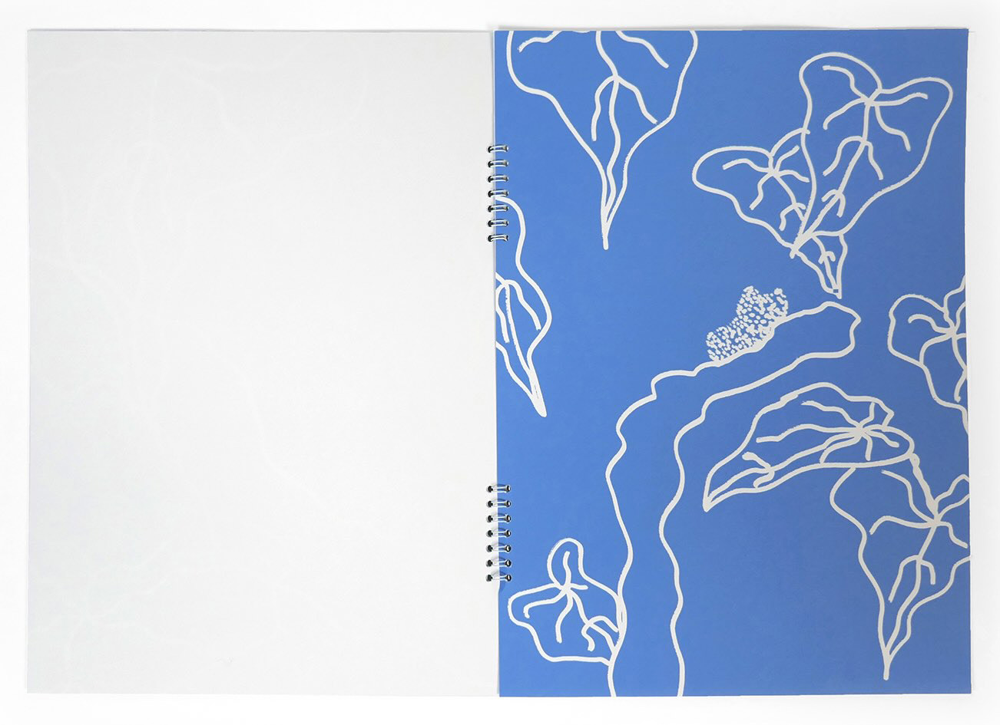
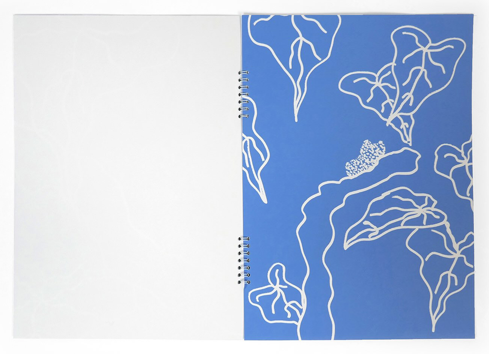

Mousse
Étude du camouflage d'un crapaud mousse dans son environement. Mise en avant de la verdure qui l'entoure et des aspérité cutanées de l'amphibien. Il est simplement représenté par ses petits boutons, plus ou moins espacé pour qu'il soit plus ou moins bien camouflé.
 
